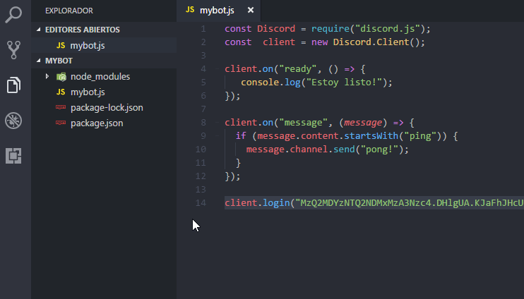
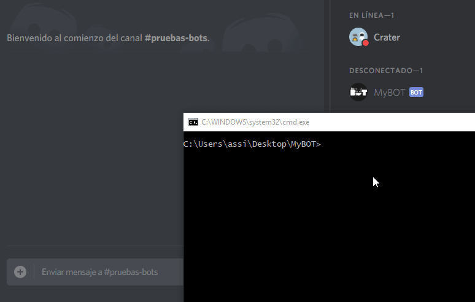

Instalación y uso de un editor de código
Creación de su cuenta App y de Bot
Instalación de Discord.js y Node.js
Introducción a un Bot de musica/audio
Usted puede ser que haya notado que muchos de los bots responden a los comandos con un prefix específico. Ya sea un signo de exclamación (!), Un punto (.), Un signo de interrogación (?) u otro carácter. Esto es útil para dos cosas.
En primer lugar, si no utiliza un prefix único y tiene más de un bot en un servidor, ambos responderán a los mismos comandos.
En segundo lugar, en el ejemplo anterior el bot responden cuando el mensaje comienza con ping que son 4 caracteres, esto significa que la siguiente frase provocará la respuesta del bot.
Para evitar esto vamos a crear un prefix, así como la capacidad de cambiar el prefix cuando guste desde un solo lugar.
Bien, hay dos formas de poder crear y usar una variable como prefix:
1. Creando una variable dentro del mismo archivo mybot.js como prefix.
2. Dividir en partes la configuración de variables, creando un archivo .JSON.
Vamos por la forma mas recomendada, crear un archivo .JSON para la configuración.

Ahora que ya hemos creado el archivo de configuracion hay 3 cosas que podemos agregar al archivo, son:
Entre otras cosas mas.
Copiar y pegar el siguiente ejemplo en el archivo de configuración .JSON.
{
"token":"tokensecreto",
"prefix":"-",
"IdOwner":"tuIdDiscord"
}
Despues de copiar el codigo de config usted puede cambiar el prefix a cual mejor le paresca para el ejemplo usare el simbolo "-" como prefix, tambien copie el token de su bot correspondiente y su ID de usuario de Discord si no sabe cual es dejelo tan como esta y continue, mas adelate veremos esa parte.
Guardar el cambio usando (CONTROL + S).
En la parte superior de su archivo del bot mybot.js, agregamos una línea para llamar al archivo config.json mediante una variable.
const Discord = require("discord.js");
const client = new Discord.Client();
//AGREGRE LA SIGUIENTE LINEA DE CONFIG AL ARCHIVO DEL BOT
const config = require("./config.json");
| Nombre | Descripción |
|---|---|
| config | Es la variable que representa la configuración instanciada de config.json |
Significa que ahora usted utilizara config como objeto de configuración para llamar los datos del archivo.
Vamos a usar la variable config que representa el archivo de configuración, primero cambiamos el token llamando directamente a la variable.
La linea de nuestro bot se ve así:
client.login("TokenSecreto-SFASfasFWf#f3KKsds51.sDSd");
Y simplemente tenemos que cambiarlo a esto:
client.login(config.token);
Listo, la otra linea que tenemos que agregar es el prefix, vamos a la linea de nuestro codigo y agregamos el prefix creando una nueva variable para los comandos. Despues de agregar el prefix a los comandos esto se deberia de ver así:
const Discord = require("discord.js");
const client = new Discord.Client();
const config = require("./config.json");
client.on("ready", () => {
console.log("Estoy listo!");
});
var prefix = config.prefix;
client.on("message", (message) => {
if (message.content.startsWith(prefix + "ping")) {
message.channel.send("pong!");
} else
if (message.content.startsWith(prefix + "hola")) {
message.channel.send("Hola que tal?");
}
});
client.login(config.token);
Luego del cambiar y agregar, guardar todo usando (CONTROL + S).
NOTA: He agregado un nuevo comando "hola" y el bot simplemente respondera con un: Hola que tal?, pero esta vez debe utilizar el prefix creado.
Vamos a activar el bot nuevamente y comprobar los cambios con el prefix.

Genial!, el bot responde las consultas atravez del prefix creado.
NOTA: Ahora el bot solo responde iniciando el prefix creado, "-" es el prefix creado para el ejemplo.
Hay una última cosa de la que quiero hablar: ¿los bots se contestan? ¡si! y esto se debe a que si usted tiene 2 bots con el mismo prefix en su servidor y cada uno debe responder a la orden del mismo prefix, "-help". Ahora si una persona escribe -help en un canal y ambos bots responden, y un bot verá la respuesta como una consulta y se contestarán a cada momento. A eso se le denomina como un bucle infinito: "repetir la misma consulta sin detenerse."
Para evitar que esto ocurra, debemos agregar dos condiciónes dentro de nuestro codigo, en el inicio del evento (message) :
if (!message.content.startsWith(prefix)) return;
if (message.author.bot) return;
NOTA: Significa que si no hay un prefix o el autor de la consula es un bot, deje de procesar.
El código final del bot debe de verse así:
const Discord = require("discord.js");
const client = new Discord.Client();
const config = require("./config.json");
client.on("ready", () => {
console.log("Estoy listo!");
});
var prefix = config.prefix;
client.on("message", (message) => {
if (!message.content.startsWith(config.prefix)) return;
if (message.author.bot) return;
if (message.content.startsWith(prefix + "ping")) {
message.channel.send("pong!");
} else
if (message.content.startsWith(prefix +"hola")) {
message.channel.send("Hola que tal?");
}
});
client.login(config.token);
Si tiene alguna pregunta y/o duda después de leer esta guía, ingrese al servidor guía en Discord: MyBOT - Server guía.
Sitio web github/Crater